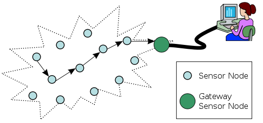

ACM-ICPC World Finals 2014 · Problem I
A wireless sensor network consists of autonomous sensors scattered in an environment where they monitor conditions such as temperature, sound, and pressure.

Samantha is a researcher working on the Amazon Carbon-dioxide Measurement (ACM) project. In this project, a wireless sensor network in the Amazon rainforest gathers environmental information. The Amazon rainforest stores an amount of carbon equivalent to a decade of global fossil fuel emissions, and it plays a crucial role in the world’s oxygen-transfer processes. Because of the huge size of this forest, changes in the forest affect not only the local environment but also global climate by altering wind and ocean current patterns. The goal of the ACM project is to help scientists better understand earth’s complex ecosystems and the impact of human activities.
Samantha has an important hypothesis and to test her hypothesis, she needs to find a subset of sensors in which each pair of sensors can communicate directly with each other. A sensor can communicate directly with any other sensor having distance at most d from it. In order for her experiments to be as accurate as possible, Samantha wants to choose as many sensors as possible.
As one does not simply walk into the Amazon, Samantha cannot add new sensors or move those that are currently in place. So given the current locations of the sensors, she needs your help to find the largest subset satisfying her criteria. For simplicity, represent the location of each sensor as a point in a two-dimensional plane with the distance between two points being the usual Euclidean distance.
The input consists of a single test case. The first line contains two integers n and d (1 ≤ n ≤ 100 and 1 ≤ d ≤ 10 000), where n is the number of sensors available and d is the maximum distance between sensors that can communicate directly. Sensors are numbered 1 to n. Each of the next n lines contains two integers x and y (−10 000 ≤ x, y ≤ 10 000) indicating the sensor coordinates, starting with the first sensor.
Display a maximum subset of sensors in which each pair of sensors can communicate directly. The first line of output should be the size of the subset. The second line of output should be the (one-based) indices of the sensors in the subset. If there are multiple such subsets, any one of them will be accepted.
4 1 0 0 0 1 1 0 1 1
2 1 2
5 20 0 0 0 2 100 100 100 110 100 120
3 4 3 5